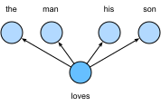
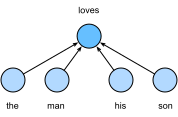

Word Embedding (word2vec)¶
Ngôn ngữ tự nhiên là một hệ thống phức tạp dùng để biểu đạt ý nghĩa. Trong hệ thống này, từ là đơn vị cơ bản của ý nghĩa. Như tên gọi, vector từ là các vector dùng để biểu diễn từ, và cũng có thể được xem là vector đặc trưng hoặc biểu diễn của từ. Kỹ thuật ánh xạ từ sang vector thực được gọi là word embedding. Trong những năm gần đây, word embedding dần trở thành kiến thức nền tảng của xử lý ngôn ngữ tự nhiên.
Vector One-Hot Là Một Lựa Chọn Kém¶
Chúng ta đã dùng vector one-hot để biểu diễn từ (ký tự được xem là từ) trong sec_rnn-scratch. Giả sử số lượng từ khác nhau trong từ điển (kích thước từ điển) là \(N\), và mỗi từ tương ứng với một số nguyên (chỉ số) khác nhau từ \(0\) đến \(N-1\). Để thu được biểu diễn vector one-hot cho bất kỳ từ nào có chỉ số \(i\), chúng ta tạo một vector độ dài \(N\) toàn 0 và đặt phần tử tại vị trí \(i\) thành 1. Theo cách này, mỗi từ được biểu diễn như một vector độ dài \(N\), và nó có thể được dùng trực tiếp bởi mạng nơ-ron.
Mặc dù vector từ one-hot dễ xây dựng, chúng thường không phải là một lựa chọn tốt. Một lý do chính là vector từ one-hot không thể biểu đạt chính xác độ tương đồng giữa các từ khác nhau, chẳng hạn độ tương đồng cosine mà chúng ta thường dùng. Với các vector \(\mathbf{x}, \mathbf{y} \in \mathbb{R}^d\), độ tương đồng cosine của chúng là cosine của góc giữa chúng:
Vì độ tương đồng cosine giữa vector one-hot của bất kỳ hai từ khác nhau nào cũng bằng 0, vector one-hot không thể mã hóa độ tương đồng giữa các từ.
word2vec Tự Giám Sát¶
Công cụ word2vec được đề xuất để xử lý vấn đề trên. Nó ánh xạ mỗi từ sang một vector có độ dài cố định, và các vector này có thể biểu đạt tốt hơn độ tương đồng cũng như quan hệ loại suy giữa các từ khác nhau. Công cụ word2vec chứa hai mô hình, đó là skip-gram [Mikolov.Sutskever.Chen.ea.2013] và continuous bag of words (CBOW) [Mikolov.Chen.Corrado.ea.2013]. Để có các biểu diễn có ý nghĩa ngữ nghĩa, việc huấn luyện của chúng dựa vào các xác suất có điều kiện có thể được xem như dự đoán một số từ bằng một số từ xung quanh chúng trong kho ngữ liệu. Vì tín hiệu giám sát đến từ dữ liệu không có nhãn, cả skip-gram và continuous bag of words đều là các mô hình tự giám sát.
Sau đây, chúng ta sẽ giới thiệu hai mô hình này và các phương pháp huấn luyện của chúng.
Mô Hình Skip-Gram¶
Mô hình skip-gram giả định rằng một từ có thể được dùng để sinh các từ xung quanh nó trong một chuỗi văn bản. Lấy chuỗi văn bản "the", "man", "loves", "his", "son" làm ví dụ. Hãy chọn "loves" làm từ trung tâm và đặt kích thước cửa sổ ngữ cảnh là 2. Như trong fig_skip_gram, với từ trung tâm "loves", mô hình skip-gram xét xác suất có điều kiện để sinh các từ ngữ cảnh: "the", "man", "his", và "son", cách từ trung tâm không quá 2 từ:
Giả sử rằng các từ ngữ cảnh được sinh độc lập khi biết từ trung tâm (tức độc lập có điều kiện). Trong trường hợp này, xác suất có điều kiện ở trên có thể được viết lại thành

Trong mô hình skip-gram, mỗi từ có hai biểu diễn vector \(d\) chiều để tính các xác suất có điều kiện. Cụ thể hơn, với bất kỳ từ nào có chỉ số \(i\) trong từ điển, ký hiệu \(\mathbf{v}_i\in\mathbb{R}^d\) và \(\mathbf{u}_i\in\mathbb{R}^d\) là hai vector của nó khi được dùng lần lượt làm từ trung tâm và từ ngữ cảnh. Xác suất có điều kiện để sinh bất kỳ từ ngữ cảnh \(w_o\) nào (có chỉ số \(o\) trong từ điển) khi biết từ trung tâm \(w_c\) (có chỉ số \(c\) trong từ điển) có thể được mô hình hóa bằng phép softmax trên tích vô hướng của các vector:
trong đó tập chỉ số từ vựng \(\mathcal{V} = \{0, 1, \ldots, |\mathcal{V}|-1\}\). Với một chuỗi văn bản độ dài \(T\), trong đó từ tại bước thời gian \(t\) được ký hiệu là \(w^{(t)}\). Giả sử rằng các từ ngữ cảnh được sinh độc lập khi biết bất kỳ từ trung tâm nào. Với kích thước cửa sổ ngữ cảnh \(m\), hàm likelihood của mô hình skip-gram là xác suất sinh tất cả các từ ngữ cảnh khi biết bất kỳ từ trung tâm nào:
trong đó bất kỳ bước thời gian nào nhỏ hơn \(1\) hoặc lớn hơn \(T\) đều có thể được bỏ qua.
Huấn Luyện¶
Các tham số của mô hình skip-gram là vector từ trung tâm và vector từ ngữ cảnh cho mỗi từ trong từ vựng. Trong huấn luyện, chúng ta học các tham số mô hình bằng cách tối đa hóa hàm likelihood (tức ước lượng hợp lý cực đại). Điều này tương đương với việc tối thiểu hóa hàm mất mát sau:
Khi dùng stochastic gradient descent để tối thiểu hóa mất mát,
ở mỗi vòng lặp
chúng ta có thể
lấy mẫu ngẫu nhiên một chuỗi con ngắn hơn để tính gradient (ngẫu nhiên) cho chuỗi con này và cập nhật tham số mô hình.
Để tính gradient (ngẫu nhiên) này,
chúng ta cần thu được
các gradient của
log xác suất có điều kiện theo vector từ trung tâm và vector từ ngữ cảnh.
Nhìn chung, theo :eqref:eq_skip-gram-softmax,
log xác suất có điều kiện
liên quan đến bất kỳ cặp từ trung tâm \(w_c\) và
từ ngữ cảnh \(w_o\) nào là
Bằng phép vi phân, chúng ta có thể thu được gradient của nó theo vector từ trung tâm \(\mathbf{v}_c\) là
Lưu ý rằng phép tính trong :eqref:eq_skip-gram-grad yêu cầu các xác suất có điều kiện của tất cả các từ trong từ điển với \(w_c\) làm từ trung tâm.
Gradient cho các vector từ khác có thể được thu được theo cùng cách.
Sau khi huấn luyện, với bất kỳ từ nào có chỉ số \(i\) trong từ điển, chúng ta thu được cả hai vector từ \(\mathbf{v}_i\) (làm từ trung tâm) và \(\mathbf{u}_i\) (làm từ ngữ cảnh). Trong các ứng dụng xử lý ngôn ngữ tự nhiên, vector từ trung tâm của mô hình skip-gram thường được dùng làm biểu diễn từ.
Mô Hình Continuous Bag of Words (CBOW)¶
Mô hình continuous bag of words (CBOW) tương tự mô hình skip-gram. Khác biệt chính so với mô hình skip-gram là mô hình continuous bag of words giả định rằng một từ trung tâm được sinh dựa trên các từ ngữ cảnh xung quanh nó trong chuỗi văn bản. Ví dụ, trong cùng chuỗi văn bản "the", "man", "loves", "his", và "son", với "loves" làm từ trung tâm và kích thước cửa sổ ngữ cảnh là 2, mô hình continuous bag of words xét xác suất có điều kiện để sinh từ trung tâm "loves" dựa trên các từ ngữ cảnh "the", "man", "his" và "son" (như trong fig_cbow), tức là

Vì có nhiều từ ngữ cảnh trong mô hình continuous bag of words, các vector từ ngữ cảnh này được lấy trung bình trong phép tính xác suất có điều kiện. Cụ thể, với bất kỳ từ nào có chỉ số \(i\) trong từ điển, ký hiệu \(\mathbf{v}_i\in\mathbb{R}^d\) và \(\mathbf{u}_i\in\mathbb{R}^d\) là hai vector của nó khi được dùng lần lượt làm từ ngữ cảnh và từ trung tâm (ý nghĩa được đảo so với mô hình skip-gram). Xác suất có điều kiện để sinh bất kỳ từ trung tâm \(w_c\) nào (có chỉ số \(c\) trong từ điển) khi biết các từ ngữ cảnh xung quanh \(w_{o_1}, \ldots, w_{o_{2m}}\) (có chỉ số \(o_1, \ldots, o_{2m}\) trong từ điển) có thể được mô hình hóa bởi
Để ngắn gọn, đặt \(\mathcal{W}_o= \{w_{o_1}, \ldots, w_{o_{2m}}\}\) và \(\bar{\mathbf{v}}_o = \left(\mathbf{v}_{o_1} + \ldots + \mathbf{v}_{o_{2m}} \right)/(2m)\). Khi đó :eqref:fig_cbow-full có thể được rút gọn thành
Với một chuỗi văn bản độ dài \(T\), trong đó từ tại bước thời gian \(t\) được ký hiệu là \(w^{(t)}\). Với kích thước cửa sổ ngữ cảnh \(m\), hàm likelihood của mô hình continuous bag of words là xác suất sinh tất cả các từ trung tâm khi biết các từ ngữ cảnh của chúng:
Huấn Luyện¶
Huấn luyện mô hình continuous bag of words gần như giống với huấn luyện mô hình skip-gram. Ước lượng hợp lý cực đại của mô hình continuous bag of words tương đương với việc tối thiểu hóa hàm mất mát sau:
Lưu ý rằng
Bằng phép vi phân, chúng ta có thể thu được gradient của nó theo bất kỳ vector từ ngữ cảnh \(\mathbf{v}_{o_i}\) nào (\(i = 1, \ldots, 2m\)) là
Gradient cho các vector từ khác có thể được thu được theo cùng cách. Khác với mô hình skip-gram, mô hình continuous bag of words thường dùng vector từ ngữ cảnh làm biểu diễn từ.
Tóm Tắt¶
- Vector từ là các vector dùng để biểu diễn từ, và cũng có thể được xem là vector đặc trưng hoặc biểu diễn của từ. Kỹ thuật ánh xạ từ sang vector thực được gọi là word embedding.
- Công cụ word2vec chứa cả mô hình skip-gram và continuous bag of words.
- Mô hình skip-gram giả định rằng một từ có thể được dùng để sinh các từ xung quanh nó trong chuỗi văn bản; trong khi mô hình continuous bag of words giả định rằng một từ trung tâm được sinh dựa trên các từ ngữ cảnh xung quanh nó.
Bài Tập¶
- Độ phức tạp tính toán để tính mỗi gradient là gì? Vấn đề gì có thể xảy ra nếu kích thước từ điển rất lớn?
- Một số cụm từ cố định trong tiếng Anh gồm nhiều từ, chẳng hạn "new york". Làm thế nào để huấn luyện vector từ của chúng? Gợi ý: xem Mục 4 trong bài báo word2vec [Mikolov.Sutskever.Chen.ea.2013].
- Hãy suy ngẫm về thiết kế word2vec bằng cách lấy mô hình skip-gram làm ví dụ. Quan hệ giữa tích vô hướng của hai vector từ trong mô hình skip-gram và độ tương đồng cosine là gì? Với một cặp từ có ngữ nghĩa tương tự, vì sao độ tương đồng cosine của các vector từ của chúng (được huấn luyện bởi mô hình skip-gram) có thể cao?